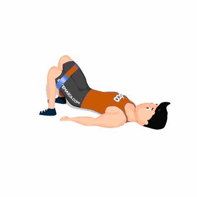

Elevação de Quadril com Faixa Elástica

O exercício tem como objetivo fortalecer os músculos glúteos e isquiotibiais.
Ficha Técnica
Tipo: Funcional
Grupo Muscular: Glúteo
Aparelho: Nenhum
Músculos: Nenhum
Como realizar
- Coloque a faixa elástica acima dos joelhos. Deite-se de costas, com os pés apoiados no chão, na largura do quadril;
- Contraía o abdômen e os glúteos enquanto pressiona os calcanhares para levantar a pélvis do chão, até que os joelhos fiquem dobrados em 90 graus;
- Inverta lentamente o movimento por uma repetição;
- Empurre os joelhos contra a faixa para mantê-los alinhados com os ombros e os pés durante todo o movimento.
 RC STORE
RC STORE